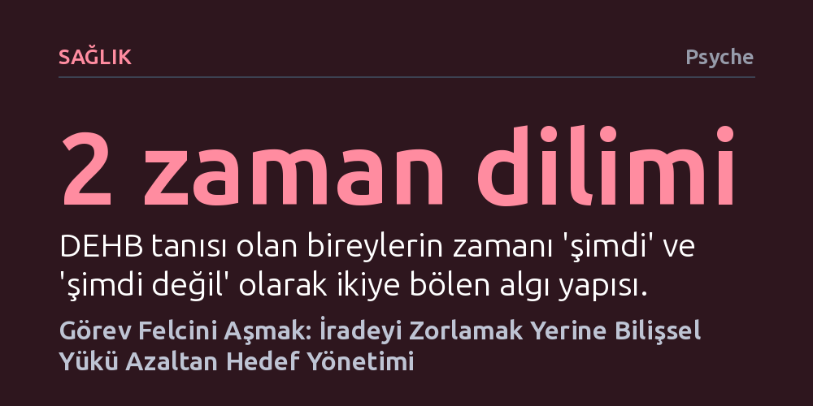

SAGLIK · Psyche · 2026-10-21
İstediğiniz halde bir işe başlayamamak tembellik değil, yürütücü işlevlerin aşırı stres veya DEHB nedeniyle kilitlenmesidir. Hedef Yönetimi Eğitimi; iradeyi zorlamak yerine adımları küçülterek ve hedefi zihinde canlı tutarak bu bilişsel tıkanıklığı çözmeyi sağlar.
Başlayamadığınız işlerin faturasını irade zayıflığına kesmek yerine sorunun beynin planlama kapasitesinde olduğunu gösterir ve tıkanıklığı açacak somut bir nöropsikolojik yöntem sunar.

Haftalardır masanızda bekleyen yarım bir rapor, ocak ayından beri ertelenen diş hekimi randevusu veya taslaklarda bekleyen tek bir e-posta... Çoğu insan bu tabloyu tembellik ya da erteleme alışkanlığı olarak yorumlar. Oysa erteleme bilinçli bir tercihtir; maçı izlemek için vergi beyannamesini sonraya bırakırken bu geceki rahatlığı yarının stresine takas ettiğinizi bilirsiniz. Görev felcinde ise durum tam tersidir: Başlamayı yürekten istersiniz, bütün öğleden sonrayı boşaltmış, dikkat dağıtıcı tarayıcı sekmelerini kapatmış ve kendinizi motive etmişsinizdir, fakat parmağınızı bile kımıldatamazsınız.
Bu felç hali, dikkat eksikliği ve hiperaktivite bozukluğu (DEHB) yaşayan yetişkinlerde sıkça görülse de yalnızca onlara özgü değildir. Birey ne kadar yetkin olursa olsun; yoğun stres, uykusuzluk veya zihinsel tükenmişlik devreye girdiğinde beynin planlama ve uygulama merkezi olan yürütücü işlevler teklemeye başlar. Görev felci bir irade ya da ahlak zaafı değil, bilişsel yönetim mekanizmasının aşırı yük altında kilitlenmesidir.
Üst kata bilgisayarınızı ve yıkanmış çamaşırları almaya çıktığınızı düşünün. Merdivende çocuğunuz seslenir, ona yardım edersiniz ve on dakika sonra masanıza döndüğünüzde elinizde ne bilgisayar vardır ne de çamaşır. Birkaç dakika önce zihninizde net olan hedefler uçup gitmiştir. Zihnimizin anlık bilgileri ve niyetleri tuttuğu yer olan çalışma belleği son derece kırılgandır ve kapasitesi oldukça sınırlıdır. Yale Üniversitesinden nörobilimci Amy Arnsten'ın araştırmaları, hafif düzeydeki stresin bile çalışma belleğinde, odaklanmada ve esnek düşünmede ölçülebilir kayıplara yol açtığını kanıtlıyor.
İşte Hedef Yönetimi Eğitimi (Goal Management Training - GMT), tam da bu kırılganlığı gidermek için ortaya çıktı. İlk olarak 1990'larda Cambridge Üniversitesinde psikolog Ian Robertson tarafından beyin hasarı geçiren bireylerin hedeflerine tutunabilmesi amacıyla geliştirilen bu yöntem, daha sonra nörobilimci Brian Levine ile birlikte klinik bir protokole dönüştürüldü. GMT, hedefin önemini bildiği halde en ufak bir uyaranla rotadan sapan zihne, adım adım ilerleyen sistematik bir destek iskeleti sunar.
Geleneksel planlayıcıların aksine Hedef Yönetimi Eğitimi, iradeye yüklenmek yerine dört aşamalı döngüsel bir mekanizma önerir. İlk aşama durmak ve sakinleşmektir. Doğal dürtümüz kendimizi zorlamak olsa da stres altındaki prefrontal korteksi yatıştırmadan odaklanmak mümkün değildir. Masadan kalkıp camdan bakmak veya üç derin nefes almak gibi kendiliğinden sona eren kısa fiziksel molalar otopilot zincirini kırar. İkinci aşama, hedefi zihinsel bir karatahtadaymış gibi tazelemektir; kafanız ne kadar dolu olursa olsun zihninizde yalnızca bir veya iki kelimelik niyeti ('rapor', 'çamaşır') sürekli tekrarlayarak hedefin buharlaşmasını engellersiniz.
Üçüncü aşama, ilk adımı neredeyse hiçbir çaba gerektirmeyecek kadar küçültmektir. Diş hekimi randevusu almak korkutucudur çünkü zihin bunu numara bulma, takvimi kontrol etme, hatta hatta bekleme gibi uzun bir eziyet zinciri olarak kodlar. İlk hedefi yalnızca 'klinik numarasını bulup bir kenara yazmak' seviyesine indirdiğinizde direnç kırılır. Yazarın bu konudaki ölçütü oldukça nettir: 'Adımı telaffuz ettiğinizde içinizden derin bir iç çekiş geçiyorsa, o adım henüz yeterince küçülmemiştir.'
Dördüncü aşama ise kontrol etmektir. Çalışmanın ortasında ve sonunda kendinize bir yargıç gibi 'Yeterince ürettim mi?' diye sormak yerine, teknik bir soru yöneltirsiniz: 'Şu an yapmayı hedeflediğim şeyi mi yapıyorum?' Bu soru, henüz tek bir kelimesini yazmadığı raporun başlık biçimlendirmesine 25 dakika harcayan birinin farkındalık kazanıp rotaya dönmesini sağlar. Eğer rotadan sapılmışsa suçluluk duymadan başa dönülür, yeni bir mikro adım belirlenir ve döngü baştan başlar.
Hedef yönetiminin dört çekirdek adımını destekleyen üç harici strateji süreci daha da sağlamlaştırır. Bunlardan ilki zamanı görünür kılmaktır. Klinik psikolog Russell Barkley'nin belirttiği üzere DEHB beyni temelde iki zaman diliminde yaşar: 'şimdi' ve 'şimdi değil'. Üç hafta sonraki bir teslim tarihi, son gece yarısına kadar soyut ve önemsiz kalır. Zamanı görünür yapmak için geri sayım sayaçları kullanmak ve alarmları genel bir iş adı yerine doğrudan eylemi tanımlayarak kurmak ('Raporu aç ve son paragrafı oku') harekete geçmeyi kolaylaştırır.
İkinci strateji, 'beden çiftleme' (body doubling) yönteminden yararlanmaktır. Tek başına çalışırken tıkanan birçok insan, aynı odada veya sessiz bir görüntülü aramada kendi işine odaklanmış bir başkası varken çok daha rahat çalışır. Burada hesap verme ya da konuşma zorunluluğu yoktur; bir masayı veya ekranı paylaşan sessiz bir refakatçinin varlığı bile beynin işe giriş direncini önemli ölçüde kırar.
Son olarak, süreci basit bir başlangıç ritüeline bağlamak gerekir. Her çalışma öncesinde aynı sandalyeye oturmak, bardağı aynı yere koymak veya zamanlayıcıyı yüzünüze doğru çevirmek gibi küçük bir fiziksel işaret, beyne doğrudan başlama sinyali gönderir. Ritüelin aşırı karmaşık olmaması ve tek bir tetikleyiciye dayanması, ortam değişse bile nerede olursanız olun çalışmaya başlamanızı mümkün kılar.